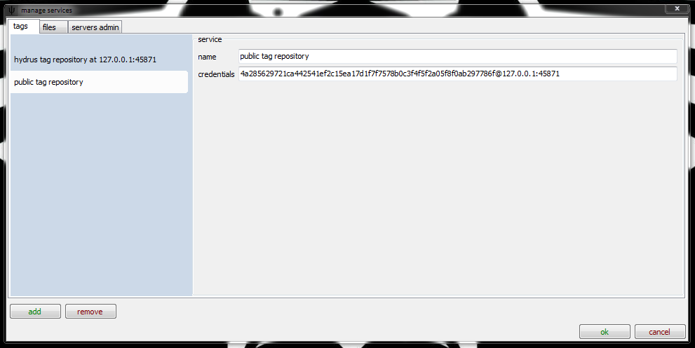
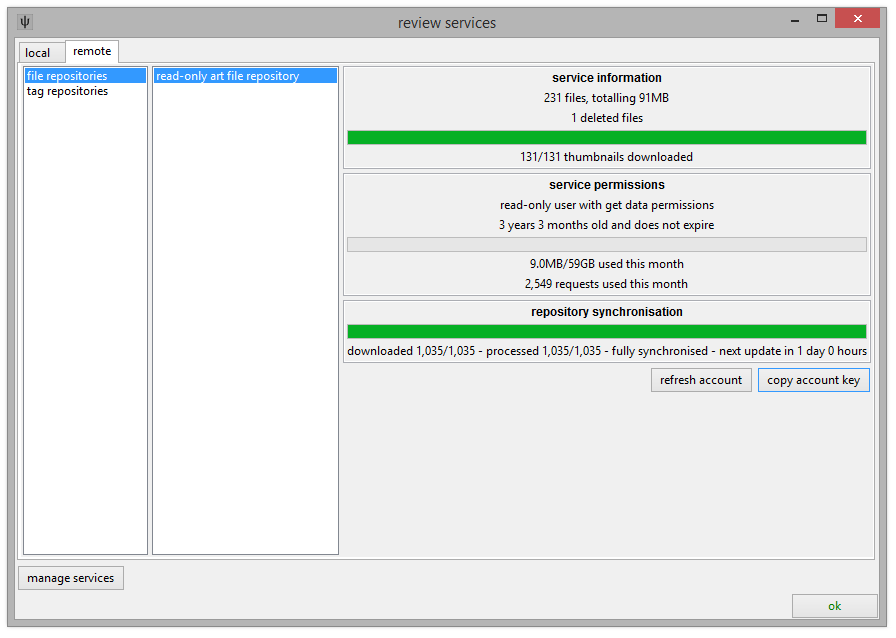

exporting and uploading
There are many ways to export files from the client:
-
drag and drop
Just dragging from the thumbnail view will export (copy) all the selected files to wherever you drop them.
The files will be named by their ugly hexadecimal hash, which is how they are stored inside the database.
If you use this to open a file inside an image editing program, remember to go 'save as' and give it a new filename! The client does not expect files inside its db directory to change.
-
export dialog
Right clicking some files and selecting share->export->files will open this dialog:

Which lets you export the selected files with custom filenames. It will initialise trying to export the files named by their hashes, but once you are comfortable with tags, you'll be able to generate much cleverer and prettier filenames.
-
share->copy->files
This will copy the files themselves to your clipboard. You can then paste them wherever you like, just as with normal files. They will have their hashes for filenames.
This is a very quick operation. It can also be triggered by hitting Ctrl+C.
-
share->copy->hashes
This will copy the files' unique identifiers to your clipboard, in hexadecimal.
You will not have to do this often. It is best when you want to identify a number of files to someone else without having to send them the actual files.
-
share->copy->path/local url
Selecting 'copy path' will copy the file's raw database path (install_path/db/client_files/[hash].ext) to your clipboard.
Selecting 'copy local url' copies a URL in the form http://127.0.0.1:45865/file?hash=[hash]. The client maintains a little localhost-only server on 45865 just for this purpose.
These are useful when you want to send a single file to another program that won't accept a drag and drop. You can copy either of these addresses into a file open dialog like so:
You can also paste into your browser's address bar, to check they are working.
The path method will always work, the url method will only work while the client is running.
The path method will send the file's hash as the filename, the url method might send something odd like file[7].
If you use the path method to open a file inside an image editing program, remember to go 'save as' and give it a new filename! The client does not expect files inside its db directory to change.
{kind=link}
sharing files
The hydrus network's server has a service that lets clients share files anonymously, called a file repository.
It simply stores files. Anyone who has an access key to the repository can see the pool's thumbnails and download anything they like. They may also have permission to upload or delete. I run a download-only file repository that you are welcome to connect to to get a feel for the interface. To add its details, go services->manage services, click add, and select 'hydrus file repository'.
This image is for the tag repo, but it is the same interface:

For the file repo, put in this information:
- hydrus.no-ip.org
- 45872
- 8f8a3685abc19e78a92ba61d84a0482b1cfac176fd853f46d93fe437a95e40a5
Hit ok and then go services->review services to see your new file repository. Over time, usually when it is idle, your client will download updates from the repository until it is fully synchronised. You can customise when this happens in file->options->maintenance and processing.

From now on, you will see your new repository under F9->files (although until your client has done some synchronisation, you will not see any files). A repository search page works exactly like a local or a trash one, it just uses a different file list. Files you do not have will be drawn with a dark background, those you do will be drawn as normal. You might not see all the thumbnails until you are fully synchronised.
To download a file, double- or middle-click it, or select from the right click menu. It should pop in fairly quickly.
If you have permission to upload files to a particular repository, that option will appear in the right-click menu for any local files. Selecting this will pend them for batch uploading; just select from the new pending menu to start the upload when you are ready.